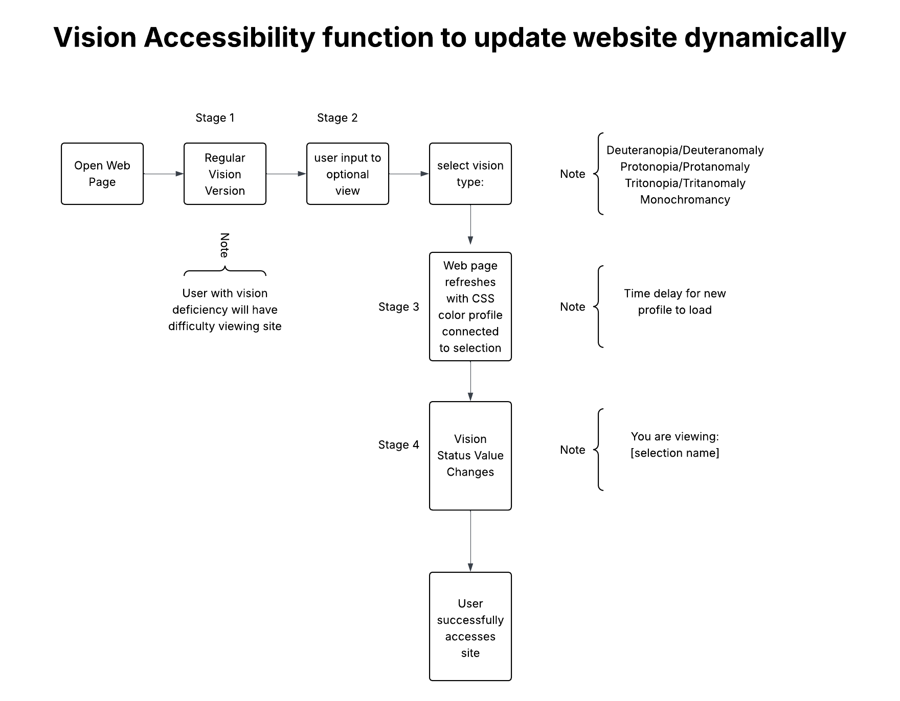

What is the core rule of the system?
Answer: To make website accessible to users with visual deficiencies
What changes over time?
Answer: The site uses alternate CSS profiles to accommodate different visual needs.
Where does the system become uneven?
Answer: The system may become uneven at the outset when it loads without visual accommodation.

Notes:
Key Types of Color Blindness:
- Red-Green Color Blindness (Most Common):
- Deuteranomaly: Reduced sensitivity to green, making green appear more red; this is the most common form.
- Protanomaly: Reduced sensitivity to red light.
- Deuteranopia: Complete lack of green-sensitive cones (M-cones).
- Protanopia: Complete lack of red-sensitive cones (L-cones).
- Blue-Yellow Color Blindness (Less Common):
- Tritanomaly: Reduced sensitivity to blue light.
- Tritanopia: Complete lack of blue-sensitive cones (S-cones).
- Total Color Blindness (Very Rare):
- Monochromacy (Achromatopsia): Inability to see any color, often accompanied by poor visual acuity and high light sensitivity.